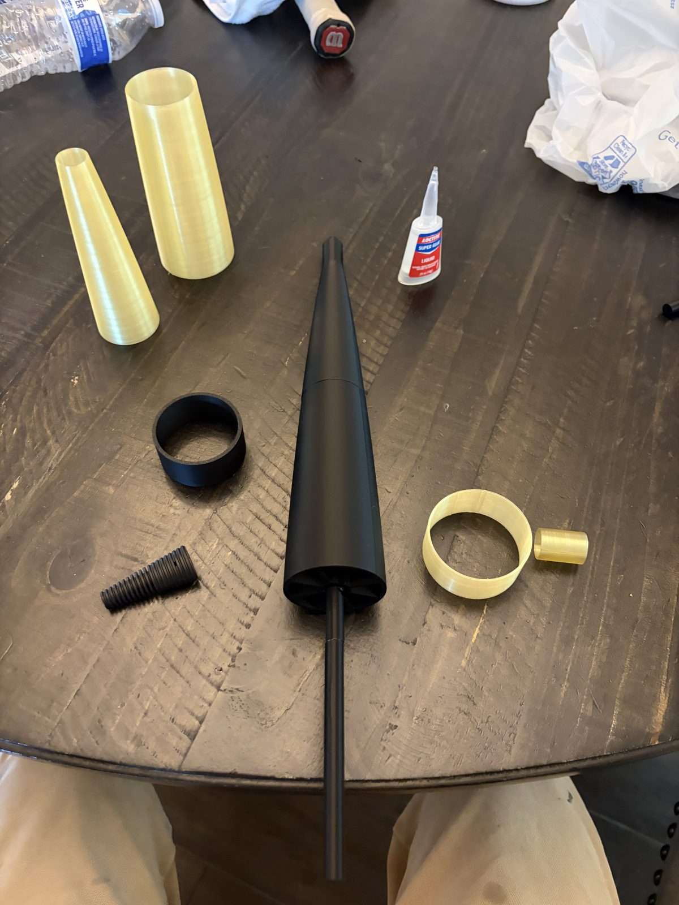
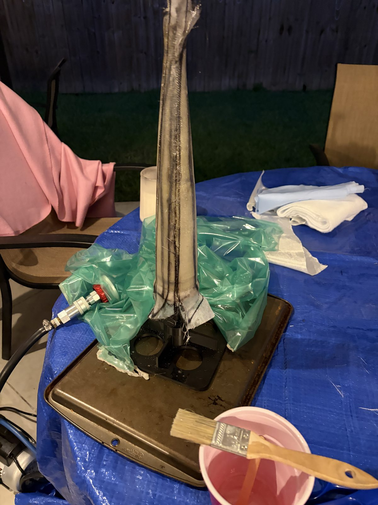
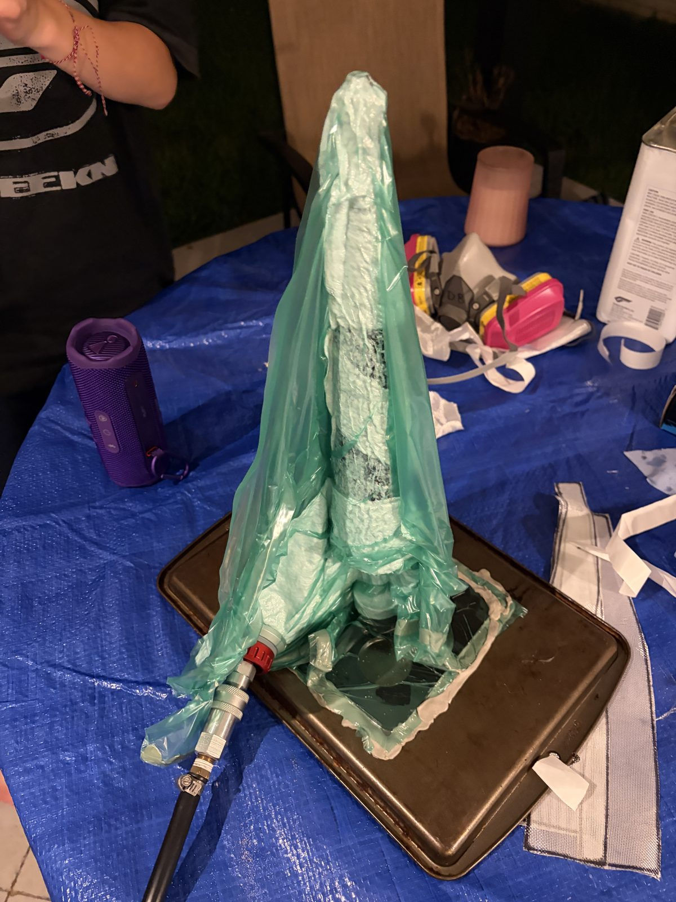
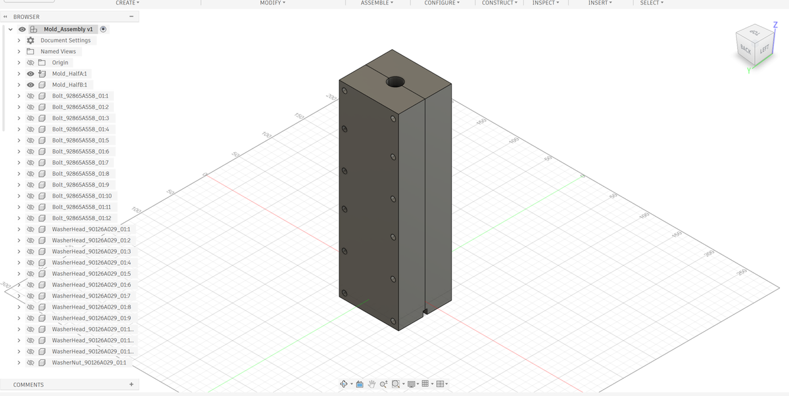
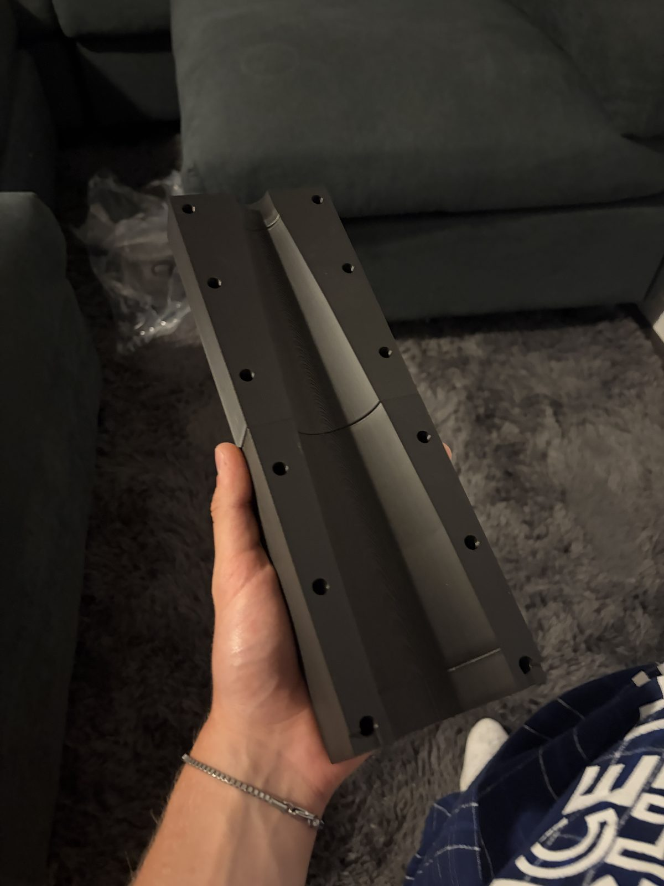
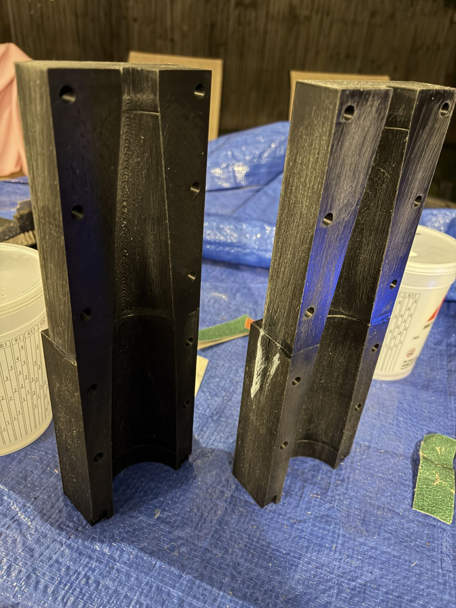
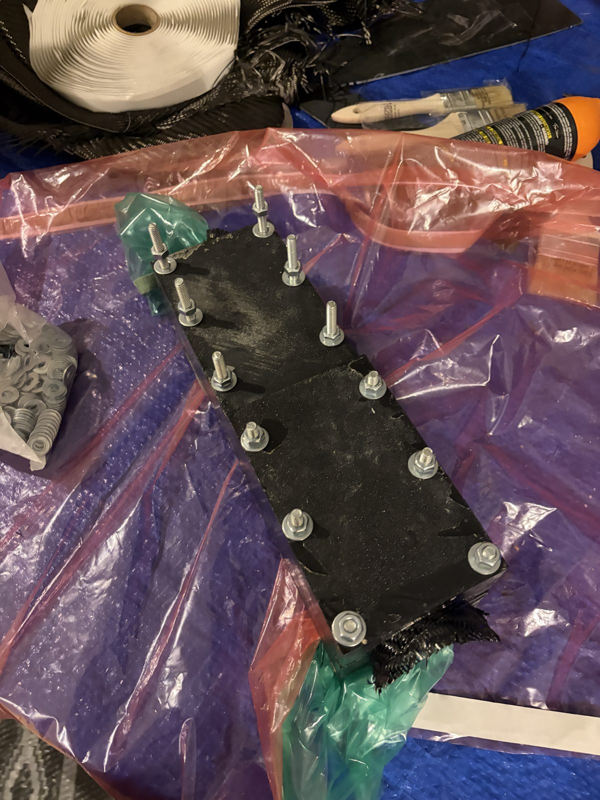
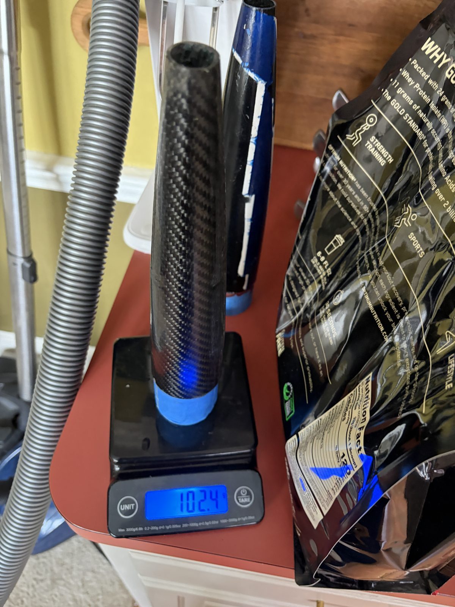
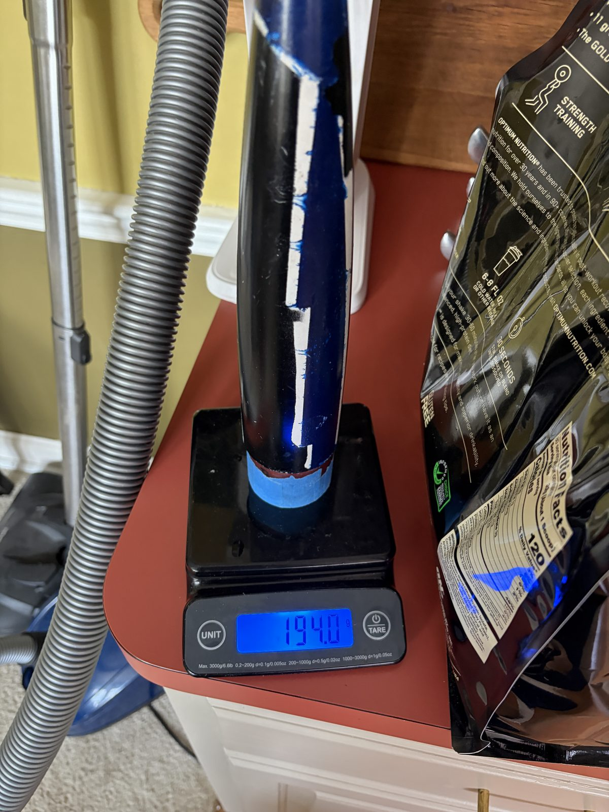

Carbon Fiber Nosecone
Personal Project · Jul – Aug 2026

{kind=link}
The finished shell on its coupler, and the mold opened the morning after the closed-mold cure.
Overview
I built a molded carbon fiber nosecone for my 2.3-inch rocket. It took two builds: a dissolvable-mandrel fiberglass attempt that would not release, then a printed split female mold that worked. Over this project I:
- Derived the geometry and the ply-count arithmetic from measured cloth
- Built a sand-filled dissolvable mandrel and ran a five-ply fiberglass layup on it
- Designed a two-half female mold and printed it in four sections
- Finished the printed cavities with epoxy skim coats and a wet-sand pass
- Ran a one-shot closed-mold carbon layup consolidated by an internal bladder
- Trimmed and fitted the shell, then flew it twice
Goals & Requirements
- Match the real airframe: 2.289 in body tube, 12.25 in Von Kármán (Haack C = 0) profile, screw-retained metal tip
- Mold-quality outer surface, with the OD set by tooling rather than sanding
- ~0.035 in wall from four plies of measured 193 g/m² twill
- Lighter than the first-build fiberglass cone
- All tooling printable on a 270 mm-bed 3D printer
- House the flight computer and its recovery load path in the bay
Build 1: dissolvable mandrel
The first build wrapped five plies of fiberglass around a dissolvable printed mandrel — a ribbed PLA core inside a 0.05 in water-soluble PVA shell, sand-filled for crush resistance — and cured it under a deliberately low 6–9 inHg vacuum bag.
{kind=link}

PVA shell, ribbed PLA core, tip hardware
{kind=link}

Five-ply wet layup on the mandrel
{kind=link}

Tent bag at 6–9 inHg
The layup consolidated cleanly; demolding did not. Water could only reach the PVA from the exposed base edge, advancing about an inch per half hour, and an overnight soak never released the core. It finally came out destructively — boiling water, snapped ribs, skin peeled in strips — which ended the mandrel approach.
Build 2: split female mold
The second build inverted the tooling: a two-half female mold whose cavity is the aerodynamic outer surface, so the OD comes off the mold and ply-thickness scatter lands on the ID. I modeled it parametrically in Fusion 360 — flanges bolted with twelve 1/4-20 bolts against roughly 60 lb of opening force — and printed each half in two sections to fit the bed. Two thin epoxy skim coats and a 320–1200 grit wet-sand turned the printed cavities into mold surfaces.
{kind=link}

Closed mold assembly in CAD
{kind=link}

Off the printer — cavity face-up, no supports
{kind=link}

Epoxy-skimmed and wet-sanded
The layup was one shot. I wet-laid four plies of 193 g/m² twill in both halves — one half’s plies cut exactly to the cavity edge, the other half’s carrying 0.5 in flaps to lap the parting line — then closed and bolted the mold while everything was still wet, so fiber runs continuously across the seams with no secondary bond. A film-wrapped internal bladder at 2–3 psi pressed the laminate into the cavity. Because the flaps near the tip are placed blind, I rehearsed the closure dry before mixing any resin.
{kind=link}
{kind=link}

Closed wet, curing overnight
Demolded the next morning, the shell weighed 102.4 g against 194.0 g for the painted fiberglass cone from build 1 — 47% lighter for the same outer mold line, on the same scale in the same session.
{kind=link}

Carbon shell — 102.4 g
{kind=link}

Build-1 fiberglass, painted — 194.0 g
Outcomes
- Molded carbon shell at 102.4 g vs 194.0 g for the build-1 fiberglass cone — 47% lighter
- Flew both flights on 15 Aug 2026: apogees 84.6 and 76.9 m, boost repeatable to ~2%
- Survived flight 1’s 17 m/s ballistic landing reflyable and flew again an hour later
- The conductive shell blocks GPS, so recovery tracking moved to the fiberglass body tube
Scope note: flight loads never sized this part (~1–2 MPa vs a >200 MPa laminate), the cured ply thickness is an estimate, and the fiberglass cone in the mass comparison carries its paint — a build-vs-build number, not a materials number.
The shell flew in the instrumented flight campaign with the flight computer aboard; the composites practice came from my internship work.